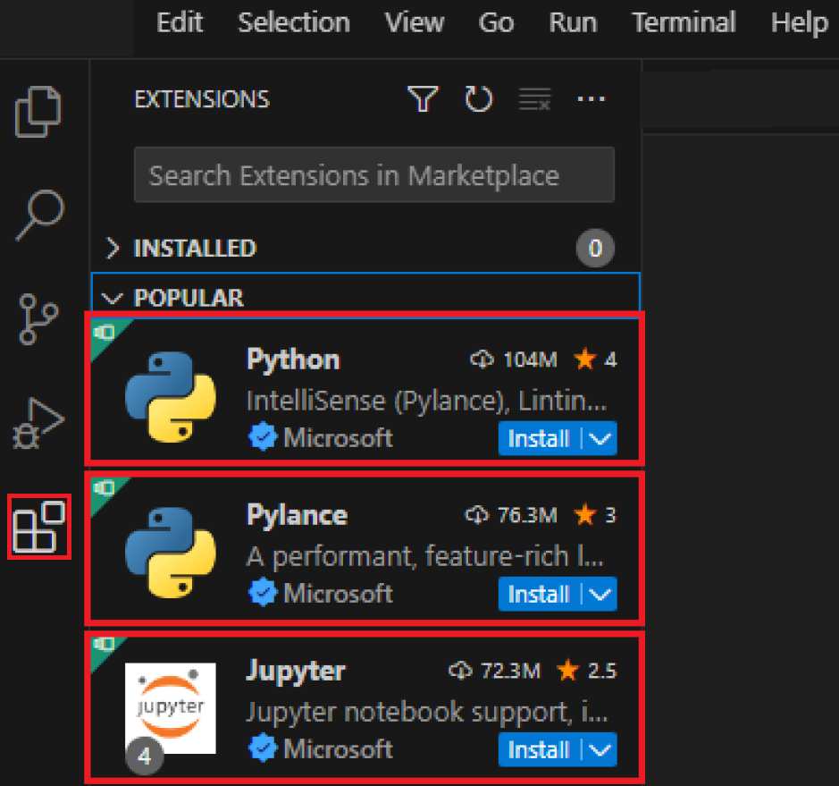
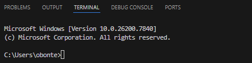
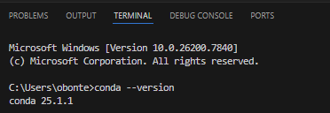
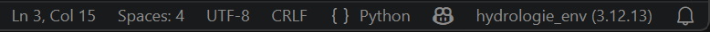
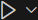
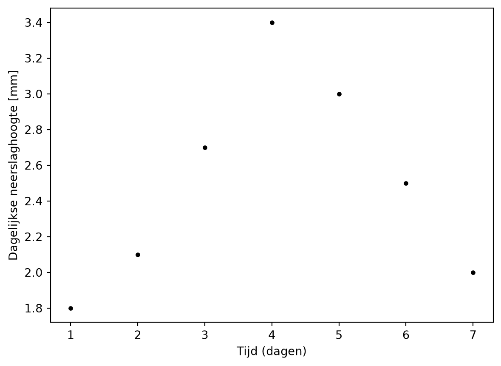
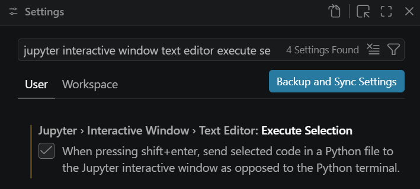
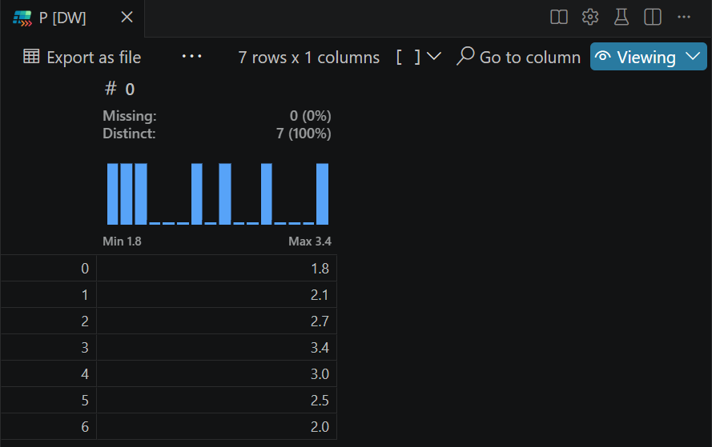

import numpy as np # Open een pakket om te werken met vectoren/matrices
import matplotlib.pyplot as plt # Open een pakket om figures/python_vs_code te maken
t = np.arange(1, 8) #[d] Maak een vector met dagen tussen 1 en 8 (excl. 8)
P = np.array([1.8, 2.1, 2.7, 3.4, 3.0, 2.5, 2.0]) #[mm/d] Maak een vector met dagelijkse nee rslaghoogtes
print(f'Gemiddelde dagelijkse neerslaghoogte: {np.mean(P):.1f} mm') # Toon de gemiddelde dagelijkse neerslaghoogte
fig = plt.figure() # Maak een nieuwe figuur
plt.plot(t, P, marker = '.', linestyle = 'None', color = 'black') # Maak een spreidingsdiagram met zwarte punten
plt.xlabel('Tijd (dagen)') # Maak een titel voor de x-as
plt.ylabel('Dagelijkse neerslaghoogte [mm]') # Maak een titel voor de y-as
plt.show() # Toon de grafiek in de outputPython and VS Code
As of 18/09/2026, this guide is in Dutch and tailored to the course Hydrology in the 3rd year of the Bachelor’s program.
Waarom deze handleiding?
Visual Studio Code (VS Code) is een code-editor (Integrated Development Environment of IDE) waarmee je zowel Python- als R-code kan schrijven en uitvoeren. In het eerste bachelorjaar leerde je al hoe je VS Code installeert en gebruikt als Python-IDE. Deze handleiding herhaalt kort de basis en toont daarna hoe je geavanceerdere Python-code transparant en reproduceerbaar kan delen en bewaren.
Python-code gebruikt vaak pakketten (packages) met specifieke versies. Na updates kunnen pakketten of Python-versies soms niet meer goed samenwerken. Zelfs als ze technisch nog samenwerken, kan de syntax of werking van functies veranderd zijn, waardoor oude code toch fouten geeft. Daarom werk je best met een lokale environment: een omgeving waarin alle nodige pakketten en versies voor één project of vak samen zitten. Zo kan je de code later opnieuw gebruiken of delen zonder dat andere Python- of pakketversies problemen veroorzaken. Voor de programmeertaal R bestaan environments ook, maar deze zijn minder vaak nodig omdat de pakketten sterker centraal gecontroleerd worden op compatibiliteit via CRAN.
Installeer de software
Volg de installatie-instructies hieronder als de software niet meer op je computer staat. Als bepaalde software nog op je computer staat, maar je ervaart problemen, dan kan het helpen om de software eerst te verwijderen en nadien de nieuwste versies opnieuw te installeren zoals hieronder aangegeven. Je leert hieronder:
Anaconda en een Python Interpreter installeren
VS Code installeren
Anaconda + Python interpreter
Een Python Interpreter is een programma dat Python code kan uitvoeren. Anaconda is een populair softwareplatform voor wetenschappelijk programmeren dat automatisch een Python en R interpreter installeert, maar ook het beheer van pakketten vergemakkelijkt. Als je Anaconda installeert, hoef je dus niet apart een Python Interpreter te installeren.
Installeer Anaconda via deze stappen:
Surf naar anaconda.com/download/success;
Download de juiste Anaconda Distribution Graphical Installer voor jouw besturingssysteem
Open de installer
Klik op I Agree, Next en uiteindelijk Install
Open de software Anaconda Prompt
Voor een Windows systeem, voer het commando
conda init powershelluit. Voor Mac/Linux gebruikers, gebruik het commandoconda init bash.Sluit Anaconda Prompt
VS Code
Installeer VS Code via deze stappen:
Surf naar code.visualstudio.com/download
Selecteer je besturingssysteem
Open de installer
Klik Next en uiteindelijk Install
VS Code extensies
VS Code kan uitgebreid worden met extensies die het programmeren vergemakkelijken of extra mogelijkheden bieden. Installeer nieuwe extensies in VS Code als volgt:
Start VS Code
Ga naar View > Extensions
Zoek voor het vak hydrologie minstens de extensies Python, Pylance, Jupyter en Data Wrangler
Klik telkens op Install

Controleer de installatie van conda
Soms moet je bewerkingen doen die niet ‘in’ je Python- of R-code staan, maar die daarbuiten gebeuren, zoals een specifiek script uitvoeren, pakketten installeren of environments creëren. VS Code voorziet daarvoor een terminal, een venster waarmee je commando’s kan geven aan jouw besturingssysteem, zonder je muis te gebruiken. Zo kan je bijvoorbeeld de software conda aansturen via de terminal om pakketten en environments te beheren. Voer deze stappen uit om een terminal te openen en hiermee te controleren of de software conda correct geïnstalleerd is:
Ga naar View > Command Palette…
Typ Terminal: Create New Terminal
Klik op de pop-up die verschijnt
Controleer of er onderaan een scherm opent dat lijkt op de onderstaande schermopname1.

- Voer deze code uit in de terminal
conda --version- Controleer of je conda xx.x.x als antwoord krijgt, vergelijkbaar met de onderstaande schermopname

- Als het antwoord command not found: conda is, volg dan de instructies op anaconda.com/docs/getting-started/working-with-conda/environments#troubleshooting
Configureer VS Code
In deze sectie leer je hoe je VS Code configureert om te kunnen gebruiken voor het vak Hydrologie. Veel van de instellingen kan je ook gebruiken voor andere vakken in de opleiding Ecosysteembeheer. Je leert hier:
een werkmap (Working Directory) selecteren in VS Code
een environment creëren en gebruiken die een lesgever deelt, waarin alle nodige, compatibele pakketten zitten die nodig zijn voor een vak
een script uitvoeren via een geselecteerde environment en de geïnstalleerde extensies gebruiken
Selecteer de Working directory
De werkmap (Working Directory) is de map op je computer waarin VS Code momenteel standaard alle bestanden zoekt, leest en opslaat als je code uitvoert. Als je deze niet bewust kiest, leidt dit typisch tot foutmeldingen zoals ‘file not found’ of vind je de figures/python_vs_code niet terug die je hebt gemaakt met Python. Selecteer de werkmap als volgt:
Ga naar File > Open folder …
Navigeer naar de map waarin je script(s), data en andere bestanden staan waarmee je wil werken
Klik Select Folder
Selecteer Yes, I trust the authors als dit gevraagd wordt
Creëer een environment via een YAML-bestand
De Python-pakketten die nodig zijn om een bepaald script uit te kunnen voeren kunnen gedeeld worden tussen gebruikers via een YAML-bestand (.yml of .yaml extensie). Dit bestand bevat een overzicht van de nodige pakketten en versies om een environment aan te maken. Nadat je een environment hebt gecreëerd op je computer, blijft het beschikbaar binnen VS Code. Hieronder wordt als voorbeeld uitgelegd hoe je het environment kan aanmaken dat je voor alle werkcolleges en taken van het vak hydrologie moet gebruiken:
Download het bestand
hydrologie_env.ymlvan UforaKies de map met dit bestand als Working Directory
Voer deze code uit in de terminal van VS Code en wacht tot de environment gecreëerd is
conda env create -f hydrologie_env.ymlMaak een nieuw
.py-bestand aan: File > New File… > Python FileSla het
.py-bestand op onder een naam naar keuze in je working directoryGa naar View > Command Palette…
Typ Python: Select Interpreter
Klik op de net gecreëerde
hydrologie_envom deze environment te gebruiken voor dit py-bestandControleer of je rechts onderaan het VS Code scherm de naam van de gekozen environment ziet, zoals in de schermopname hieronder. Als je hier base ziet staan, dan is de standaard Python-environment die meekomt met Anaconda nog geactiveerd. Controleer de gebruikte environment telkens voordat je een script runt

Voer een volledig Python script uit
- Kopieer deze Python-code in het py-bestand via het klembord-icoon
Voer het volledige script uit door te klikken op het pijl-icoon

Controleer of je onderstaande output krijgt
Gemiddelde dagelijkse neerslaghoogte: 2.5 mm
Voer een selectie van een Python script uit en bekijk variabelen
Bij lange of rekenintensieve scripts is het tijdrovend om bij elke aanpassing het volledige script opnieuw uit te voeren. Met de Jupyter extensie kan je een selectie van je code uitvoeren om snel iets te testen. Jupyter laat ook toe om de waarde(n) van variabelen te bekijken, zelfs als ze niet in de output van het script terecht komen. De extensie Data Wrangler stelt je bovendien in staat om variabelen met veel data in tabelvorm te bekijken. Voer hiervoor de volgende stappen uit:
Ga naar File > Preferences > Settings
Zoek naar Jupyter Interactive Window Text Editor Execute Selection
Vink deze optie aan

Selecteer het volledige script met je cursor en toets shift + enter
Klik op Jupyter Variables in de nieuwe Jupyter Interactive Window. Als Jupyter Variables niet meteen zichtbaar is, klik dan op de puntjes:

- Controleer of je onderstaande variabelen ziet staan

- Dubbelklik op één van de variabelen om via Data Wrangler de variabele als een tabel te bekijken

- Pas dan alleen het print commando in het py-bestand aan
print(f'Totale neerslaghoogte: {np.sum(P):.1f} mm') # Toon de totale neerslaghoogte over de meetperiodeSelecteer alleen het aangepaste commando met je cursor en toets shift + enter
Controleer of je onderstaande output ziet in de Jupyter Interactive Window
Totale neerslaghoogte: 17.5 mmTips voor programmeren
Er zijn ontzettend veel pakketten, functies, methodes, datatypes etc. beschikbaar in Python. Je hoeft deze echter niet allemaal van buiten te kennen om ermee te kunnen werken. Als je niet weet hoe een functie werkt of welke functie voor een bepaalde opdracht geschikt is, dan kan je volgende hulpmiddelen gebruiken, in volgorde van belang:
- Gebruik het ingebouwde help-commando als je niet weet welke input parameters een functie verwacht of hoe deze werkt. Meestal helpen de ‘Examples’ onderaan het best om de basiswerking van een functie snel te begrijpen.
help(np.sum)
OpmerkingOutput
Help on method descriptor sum in module numpy:
sum(
a,
axis=None,
dtype=None,
out=None,
keepdims=<no value>,
initial=<no value>,
where=<no value>
)
Sum of array elements over a given axis.
Parameters
----------
a : array_like
Elements to sum.
axis : None or int or tuple of ints, optional
Axis or axes along which a sum is performed. The default,
axis=None, will sum all of the elements of the input array. If
axis is negative it counts from the last to the first axis. If
axis is a tuple of ints, a sum is performed on all of the axes
specified in the tuple instead of a single axis or all the axes as
before.
dtype : dtype, optional
The type of the returned array and of the accumulator in which the
elements are summed. The dtype of `a` is used by default unless `a`
has an integer dtype of less precision than the default platform
integer. In that case, if `a` is signed then the platform integer
is used while if `a` is unsigned then an unsigned integer of the
same precision as the platform integer is used.
out : ndarray, optional
Alternative output array in which to place the result. It must have
the same shape as the expected output, but the type of the output
values will be cast if necessary.
keepdims : bool, optional
If this is set to True, the axes which are reduced are left
in the result as dimensions with size one. With this option,
the result will broadcast correctly against the input array.
If the default value is passed, then `keepdims` will not be
passed through to the `sum` method of sub-classes of
`ndarray`, however any non-default value will be. If the
sub-class' method does not implement `keepdims` any
exceptions will be raised.
initial : scalar, optional
Starting value for the sum. See `~numpy.ufunc.reduce` for details.
where : array_like of bool, optional
Elements to include in the sum. See `~numpy.ufunc.reduce` for details.
Returns
-------
sum_along_axis : ndarray
An array with the same shape as `a`, with the specified
axis removed. If `a` is a 0-d array, or if `axis` is None, a scalar
is returned. If an output array is specified, a reference to
`out` is returned.
See Also
--------
ndarray.sum : Equivalent method.
add: ``numpy.add.reduce`` equivalent function.
cumsum : Cumulative sum of array elements.
trapezoid : Integration of array values using composite trapezoidal rule.
mean, average
Notes
-----
Arithmetic is modular when using integer types, and no error is
raised on overflow.
The sum of an empty array is the neutral element 0:
>>> np.sum([])
0.0
For floating point numbers the numerical precision of sum (and
``np.add.reduce``) is in general limited by directly adding each number
individually to the result causing rounding errors in every step.
However, often numpy will use a numerically better approach (partial
pairwise summation) leading to improved precision in many use-cases.
This improved precision is always provided when no ``axis`` is given.
When ``axis`` is given, it will depend on which axis is summed.
Technically, to provide the best speed possible, the improved precision
is only used when the summation is along the fast axis in memory.
Note that the exact precision may vary depending on other parameters.
In contrast to NumPy, Python's ``math.fsum`` function uses a slower but
more precise approach to summation.
Especially when summing a large number of lower precision floating point
numbers, such as ``float32``, numerical errors can become significant.
In such cases it can be advisable to use `dtype=np.float64` to use a higher
precision for the output.
Examples
--------
>>> import numpy as np
>>> np.sum([0.5, 1.5])
2.0
>>> np.sum([0.5, 0.7, 0.2, 1.5], dtype=np.int32)
np.int32(1)
>>> np.sum([[0, 1], [0, 5]])
6
>>> np.sum([[0, 1], [0, 5]], axis=0)
array([0, 6])
>>> np.sum([[0, 1], [0, 5]], axis=1)
array([1, 5])
>>> np.sum([[0, 1], [np.nan, 5]], where=[False, True], axis=1)
array([1., 5.])
If the accumulator is too small, overflow occurs:
>>> np.ones(128, dtype=np.int8).sum(dtype=np.int8)
np.int8(-128)
You can also start the sum with a value other than zero:
>>> np.sum([10], initial=5)
15
- Test commando’s op kleine, fictieve datasets voordat je ze toepast op grote datasets om te begrijpen wat ze doen
np.array([0,-1,1]) > 0
OpmerkingOutput
array([False, False, True])Voer een selectie van een Python script uit en bekijk variabelen om te controleren of je commando’s het gewenste effect hebben
Vraag hulp aan medestudenten of begeleiders
Gebruik Google om documentatie en voorbeelden van het gebruik van commando’s op te zoeken
Gebruik GenAI. Hou hierbij rekening met de richtlijnen voor verantwoord gebruik van GenAI van de UGent. Specifiek geldt hier een verbod om de data te delen die je van de lesgevers krijgt. Wees je bewust van de nadelen van GenAI voor oefeningen, zoals:
- het kan je motivatie verminderen
- het kan je leerproces verhinderen, waardoor je tijdens het semester misschien sneller resultaten bekomt maar tijdens het examen minder goed kan antwoorden op vragen
- het verbruikt veel energie, terwijl gelijkaardige info waarschijnlijk al ergens op het internet staat
Je bent nu klaar voor het eerste werkcollege van Hydrologie! Hieronder staat optionele extra informatie die handig kan zijn voor je taken of voor andere vakken.
Beheer zelf environments (optioneel)
Maak environments aan
Je kan zelf nieuwe environments aanmaken als de base-environment of environment gedeeld door een lesgever niet voldoet aan je noden. Maak eerst een nieuw YAML-bestand aan met de pakketten die je wil gebruiken. Je hoeft de pakket-versies niet per sé te specifiëren. De software conda controleert automatisch welke versies van de nodige pakketten onderling compatibel zijn en installeert deze. Er worden ook automatisch andere pakketten geïnstalleerd die niet expliciet in de YAML staan als deze nodig zijn om de gevraagde pakketten te laten werken.
Ga naar File > New Text File > Save as > Zoek de huidige Working Directory > Kies als naam bijvoorbeeld
example_enven kies bij Opslaan als YAMLGebruik onderstaande syntax en vul de lijst met pakketten aan naar wens
name: example_env
channels:
- conda-forge
dependencies:
- python
- numpy
- matplotlib- Voer onderstaande code uit in de terminal van VS Code en wacht tot de environment gecreëerd is
conda env create -f example_env.yml- Voer deze code uit in de terminal om de environment te activeren (hiermee wordt je openstaande python script niet per sé uitgevoerd via deze environment, maar kan je via de terminal aanpassingen maken aan deze environment)
conda activate example_envDeel environments transparant en reproduceerbaar
Als je een YAML-bestand zonder versies specifieert bestaat het risico dat ditzelfde bestand tot andere versies leidt als iemand hiermee op een ander moment een environment maakt. Als je dit wil voorkomen, moet je de versies die je gebruikt mee in het YAML-bestand zetten. Het laatste cijfer van een versie, zoals de ‘3’ in ‘2.1.3’ hoef je niet te vermelden. Dit is de patch-versie en verandert gewoonlijk geen syntax.
- Voer onderstaande code uit in de terminal om te zien welke versies in je actieve environment staan
conda list- Zoek de pakketten die in je YAML-bestand staan en kopieer hun hoofd- en onderversie (de eerste 2 cijfers) naar het YAML-bestand, zoals in het voorbeeld hieronder
name: example_env
channels:
- conda-forge
dependencies:
- python=3.13
- numpy=2.3
- matplotlib=3.10- Bewaar en deel dit bestand samen met het programmeerproject waarvoor je het gebruikt
Verwijder environments
Je kan environments als volgt van je computer verwijderen:
- Voer onderstaande code uit in de terminal om alle environments te deactiveren
conda deactivate- Voer onderstaande code uit in de terminal om de environment met naam example_env te verwijderen van je computer
conda remove --name example_env --allPandas (optioneel)
Welke functies je precies gebruikt voor de oefeningen en taken van het vak Hydrologie, doet er niet toe voor de evaluatie. Je wordt enkel geëvalueerd op het inzicht in je eigen code, het eindresultaat en de transparantie en reproduceerbaarheid. Het pakket Pandas is echter wel een aanrader voor de analyse van tijdreeksen. Dit pakket is een uitbreiding op NumPy, die veel typische bewerkingen op grote datasets vereenvoudigd, zoals filteren, groeperen en sorteren, vergelijkbaar met tidyverse in R. Een introductie tot Pandas vind je hier: pandas.pydata.org/pandas-docs/stable/user_guide/10min.
Quarto (optioneel)
Als je een wetenschappelijk verslag schrijft in Word of Latex, kan je je Python-code als bijlage toevoegen voor transparantie en reproduceerbaarheid. Met de software Quarto kan je beide tegelijk: je kan hiermee stukken opgemaakte tekst schrijven, afgewisseld met stukken Python- (of R-)code. Je kan een quarto-document omzetten (renderen) naar een HTML, PDF of Word-bestand en daarbij de output van de code automatisch tonen in het rapport, al dan niet samen met de code zelf. Deze handleiding werd op die manier gemaakt. Meer info over hoe je Quarto kan gebruiken in VS Code vind je op quarto.org/docs/tools/vscode/index.html.
Voetnoten
Onderstaande afbeelding is voor Windows, voor Mac/Linux kan dit er licht anders uitzien↩︎